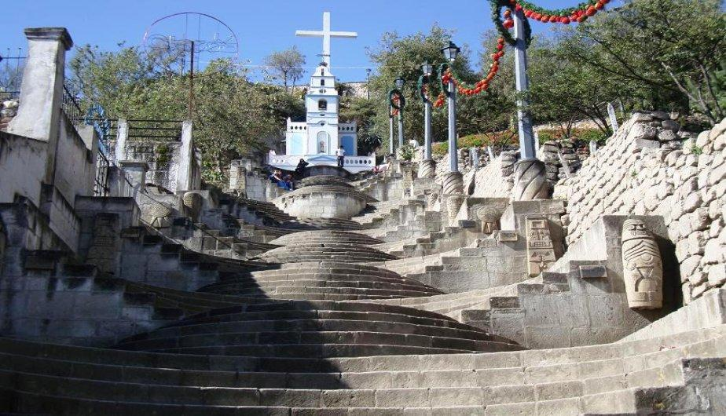
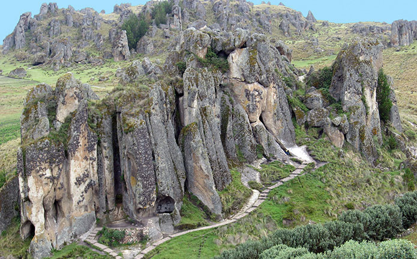
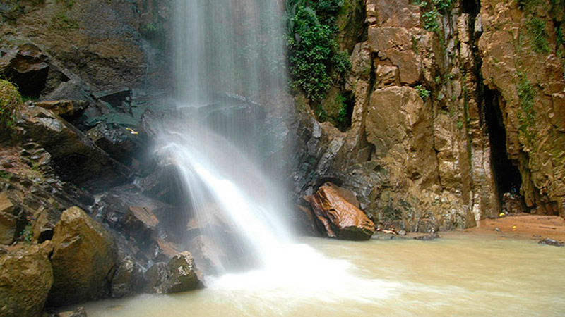

La hacienda La Colpa es uno de los centros turísticos, promocionados por las diferentes agencias de turismo. Una de las características especiales de este lugar es el llamado de las vacas por su nombre, las cuales al escuchar su nombre, se ubican
en su correspondiente lugar en el establo para el ordeño.
Haga click en la imágen para ver un documental
Autor: RPP
Datos Generales
Ubicación: A 11 kilometros al suroeste de la ciudad de cajamarca (15 minutos en auto)
Clima: Templado
Horario de visita: 9:00 am a 5:00 pm
Complejo turístico Baños del Inca
El complejo turístico Baños del Inca se encuentra ubicado en el distrito de Baños del Inca, a una altitud de 2.667 metros sobre el nivel del mar, en el departamento de Cajamarca. Este lugar está conformado por una serie de atractivos turísticos
que combinan a la perfección flora, fauna y restos arqueológicos.
Autor:Redacción Peru.com
Datos Generales
Ubicación: A 10 minutos de la ciudad de Cajamarca
Clima: Templado
Horario de visita: de 5:00 am a 8:00 pm
Cerro de Santa Apolonia

Mirador de Santa Apolonia en Cajamarca Perú Este cerro de Santa Apolinia tiene una altura de 2,764 metros sobre el nivel del mar. Se ubica al lado Oeste del valle y de la ciudad de Cajamarca. El cerro de Santa Apolonia antes se le conocía con el nombre
Rumi Tiana o "Asiento de Piedra". La cultura Chavin es la que modifica la cima del cerro Santa Apolonia en el año 1,200 antes de Cristo.
Autor:Redacción Peru.com
Datos Generales
Ubicación: A 300 metros de la plaza de armas de la ciudad de Cajamarca
Clima: Templado
Horario de visita: de 7:00 am a 6:30 pm
Los Frailones de Cumbemayo

Descubierto en 1937, está rodeado por un interesante bosque de piedras que parecen reproducir las siluetas de piadosos frailes (por lo que familiarmente se les denomina "frailones"). Además, destacan el Acueducto (1000 a.C.), singular obra de
ingeniería hidráulica; el denominado Santuario, farallón con apariencia de una gigantesca cabeza humana; y Las Cuevas, donde existen grabados o petroglifos.
Datos Generales
Ubicación: A 20km al suroeste de la ciudad de Cajamarca
Clima: Templado
Temperatura promedio: Entre 5° y 18°
Acceso Via terrestre: Se puede tomar alguna movilidad que se dirija a Chetilla, o se puede contratar alguna agencia de turismo
Cataratas de Llacanora
>
LLACANORA por sus caracteristicas es un tipico pueblo de sierra, su significado es "Tierra de Color". Llacanora cuentas con dos caidas de agua, conocidas como las cataratas de Llacanora, la primera catarata del recorrido tiene el nombre de Catarata
Hembra, su caida de agua es de poca altura en comparacion con la de la Catarata Macho.